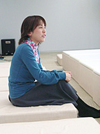

「クリエイターズ インタビュー」 第12回目は、
『ソニックと秘密のリング』メインプログラマーの西村 牧子を紹介！
プロフィール：
西村 牧子（にしむら まきこ）
セガ/第一ＧＥ研究開発部/プログラムセクション
1999年セガ入社
『ルーマニア＃203』
『ソニックアドベンチャー2』『ソニックアドベンチャー2バトル』
『ソニックヒーローズ』ではセガスタジオUSAにてステージ・サウンドプログラム担当
『ソニックと秘密のリング』ではメインプログラマーとしてメインプログラムとプレイヤープログラムを担当
今回は、2007年3月15日に発売しました『ソニックと秘密のリング』メインプログラマーの西村 牧子さんにお話しを伺いたいと思います。
まず、どのようなお仕事を担当されていたか、ご説明いただけますでしょうか？
メインプログラマーとして、プレイヤー周りのプログラムとシステム全般のプログラム、あとプログラマー全員のスケジュール管理やパーティーゲーム制作のサポート、サウンド周りのシステム設計などをやってました。
どのような経緯で『ソニックと秘密のリング』を手掛けることになったのでしょうか？
セガスタジオUSAで『ソニックヒーローズ』を制作後、日本に帰国してPC版の移植を手がけた後、次のプロジェクトについて試行錯誤をしていました。そんな時、任天堂から新しいハードが出ると聞き、これでソニックを作るぞ！ということで参加することになりました。
ソニックでは、初めての「Wii」作品！
新世代ハードを選んだことでのご苦労も多かったと思うのですが、開発のほうはいかがだったでしょうか？
前回のプランナーのお二人へのインタビューでは、プログラマーの方々には苦労をかけたという話しを伺いました。プログラマーサイドからのご意見をお聞かせ下さい！
一番苦労したのはWiiリモコンでの操作についてですね。例えばリモコンを上から下に振る、という動作一つ取っても、人によっては直前に無意識に上に上げてしまったり、振り下げた直後すぐに上に戻してしまったり、人によって全く動かし方が違ってくるんです。なので自分で「この操作ならいける！」と思って（メインプランナーの）岸本や他の人に試してもらっても狙ったアクションが全然出なかったりして…。試行錯誤の連続でした。
それとスキルの追加ですね。基本となる横移動の速度も調整に調整を重ねてやっと決定したのですが、更なるステップアップをしたい！ということで、「スキルで速度を変えられるように」と岸本から言われた時は確かに「またー？」って言いましたね(笑)。
その時点で十分良いものができていましたから。でも、岸本は飽くなき挑戦をし続けるゲームクリエイターでした(笑)。
私は開発中も常に初心者の目線で考えるようにしていたので、最初はスキルが入ることで「ゲームが複雑にならないか？」「とっつきにくくならないかな？」と心配したのですが、スキルをカスタマイズしなくてもある程度遊べ、スキルを使えばより遊びやすくする方向で調整を行いました。最終的にはスキルはこのゲームに無くてはならないエッセンスになったので、入れて良かったと思っています。
あとは、個人的にはソニックをより自然に走らせることに注力しました。今回のソニックは常に走っているので、例えば高いところから着地した時も「着地→立ち上がって→走る」という動きだと不自然なんですね。着地の重みを見せつつすぐ走り出すような動きにするにはどうしたらいいだろう？と常にデザイナーと考えながら作っていました。
プロジェクトを進める上で、何が一番大変でしたか？
どんなところで苦労されましたでしょうか？
アドベンチャーモード、パーティーモード、二つの全くシステムの異なるゲームを入れるということで、全ての要素を入れきれるか、いつも心配していました。
WiiではメディアがDVDになったことでディスク容量は問題なかったのですが、プログラムコードのサイズは増大するし、ステージはマップの密度が濃くなることでメモリが足りなくなるし。
また、セーブやサウンド周りなどはアドベンチャー・パーティーモードとも共通のプログラムを使っていましたが、その部分で問題が起きないかが不安でした。実際には個々のスタッフが早めに問題点を把握し対応してくれたおかげで深刻な事態にならずに済みましたが。